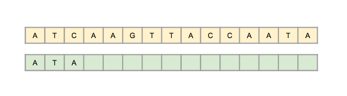

Rabin-Karp is another pattern searching algorithm to find the pattern in a more efficient way. It also checks the pattern by moving window one by one, but without checking all characters for all cases, it finds the hash value. When the hash value is matched, then only it tries to check each character. This procedure makes the algorithm more efficient. The time complexity is O(m+n), but for the worst case, it is O(mn).
A completely different approach to substring search which uses hashing was discovered by Rabin and Karp. Hashing is a method where a function, called the hash function, is used to map data of arbitrary size to data of a fixed size. The hash function returns values which are sometimes named as hash values, hash codes, digests, or simply hashes. (Hash functions are often confused with fingerprints, checksums, check digits, error-correction etc.; and that is why this algorithm is also known as the ”Rabin-Karp fingerprint algorithm”.)
Different problems use, in general, different hashing methods (functions). For the string matching problem, a hash function is constructed for the pattern. The same hash function is used for finding a match for each possible text substring of length m. The searching process is exactly the same as if the pattern is stored in a hash table and then it performs a search for each substring of the text. The main advantage (which has an impact on the space complexity) is that there is no need to allocate the memory for the hash table.
This process leads to a worse time complexity than the brute-force algorithm. This is due to computing the hash function which involves all characters and is more time-consuming since it only compares characters as in the naive algorithm. In spite of that, in the real world it has been shown that computing hash functions for m characters by Rabin-Karp’s algorithm can be done in constant time and leads to a linear time substring matching in practical situations. Hash functions are the reason why this algorithm is in the group of effective string searching algorithm and has practical and theoretical usage in many cases.
A string of length m corresponds to an m-digit base-R number. For keys of this type, it is necessary to have a certain hash function which converts an m-digit base-R to an integer value from 0 to Q−1. Modular hashing is used in more complex cases, where this process takes the remainder of dividing the number with Q. Instead of the remainder in practice is mostly used a random prime number Q, which is chosen in that way so the number is as large as it is possible. In such cases, it is important to avoid overflow.
We give a simple example to demonstrate algorithm’s working. In this example a small Q = 997 (a hash table size) is being used, which in real situations hardly ever happens and R = 10. The pattern P = 26535 is searched in the text T = 3141592653589793. The hash value for the pattern is 26535%997 = 613, which means that iterations will be performed in the text until there is found a substring with the same value (613) and has as many characters as the pattern. In the example the substring is found in the seventh iteration (the index is six) because the first six values returned are: 508, 201, 715, 971, 442 and 929.
In the example, the number of the characters in the pattern is five and still there is no problem. Difficulties appear when the number of the characters is 100, 1000 etc. To handle such cases we often use the well-known Horner’s method. This method is often used to calculate values of polynomials.
In Rabin-Karp algorithm only a simple application of Horner’s method is used, in an elementary function which implements the hash function. There is only one ”for loop”, which runs over all characters of the pattern (m times) and computes the hash function by the formula given in the pseudocode below.
HASH FUNCTION(key, m) for j = 0 to m h = (R * h + key[j]) % Q return h
Because this algorithm uses some arithmetics, one more time the accent will be on the Horner’s rule. The finite alphabet Σ has ten elements, i.e. ten digits. Given a pattern P[1, ..., m], let p denote its corresponding decimal value. Similarly, for a given text T[1, ..., n], let ts denote the decimal value of the length-m substring T[s + 1, ..., s + m], for s = 0, 1, ..., n − m. Certainly, ts = p if and only if T[s + 1, ..., s + m] = P[1, ..., m]; thus s is a valid shift (and vise versa applies). If p can be somehow computed in time Θ(m) and all the ts (for s = 0, 1, . . . , m) values can be computed in time Θ(n − m + 1), then all valid shifts can be determined in time Θ(m) + Θ(n − m + 1) which is Θ(n). By using Horner’s rule, p can be computed in time Θ(m): p = P[m] + 10(P[m − 1] + 10(P[m − 2] + ... + 10(P[2] + P[1])...)) Each of the other values t1, t2, ..., tn−m, can be computed in time Θ(n− m). Notice that ts+1 can be computed from ts in constant time, since: ts+1 = 10(ts − 10m−1T[s + 1]) + T[s + m + 1]
For example, let m = 5, q = 13, and T = [3, 1, 4, 1, 5, 2]. Consequently, t0 = 31415. So, t1 = 10(31415 − 105−1 ∗ T[1]) + T[5 + 1] = = 10(31415 − 104 ∗ 3) + 2 = 10(1415) + 2 = 14152
This example shows how Horner’s rule is used: subtracting 10m−1 ∗ T[s + 1] removes the high-order digit from ts; multiplying the result by 10 shifts the number left one position; and adding T[s + m + 1] brings in the appropriate low-order digit.
The pseudocode for the RK algorithm accepts the text T, the searching pattern P, Q and d, where d is basically |Σ| and is presented in the code below. The function power(d,m-1) represents to d m−1 and mod is the usual modulo function.
RABIN-KARP ALGORITHM(T,P,d,Q) n = length(T) m = length(P) h = power(d, m-1) * mod Q p = 0 t0 = 0 for i = 1 to m do p = (d * p + P[i]) * mod Q t0 = (d * t0 + T[i]) * mod Q for s = 0 to n - m do if p = tS then if P[1,..,m] = T[s+1,..,s+m] then print "Suitable pattern occurs at shift" s if s < n - m then tS+1 = (d(tS - T[s+1]*h) + T[s+m+1]) * mod Q
The first for loop is used for preprocessing and takes Θ(m) time for the first process. The second for loop is used for matching and takes Θ((n−m+ 1)m) time in the worst case. If P = a m and T = a n , then the verifications take time Θ((n − m + 1)m), since each possible verification is a valid shift.
In some applications, not all verifications are valid shifts. Here, the matching time of the Rabin-Karp algorithm is O((n-m+1) + cm) = O(n+m), where c is a constant and does not have an impact on the matching time of the algorithm. Since it is usually assumed that the length of the pattern is smaller or at most equal, but never larger that the length of the text i.e. m ≤ n, the matching time of the Rabin-Karp algorithm is O(n).
Assume the text is length n and the length of the word is m. The best and average-case running time of Rabin-Karp is O(m+n) because the rolling hash step takes O(n) time and once the algorithm finds a potential match, it must verify each letter to make sure that the match is true and not a result of a hashing collision, and therefore must check each of the m letters in the word.
The worst-case running time of Rabin-Karp is O(nm). This would occur with an extremely awful hash function that resulted in a false positive at each step. Since whenever the algorithm thinks it found a match, it must verify each of the m letters in the word, if there is a collision at each step, m letters will be checked n times resulting in a running time of O(nm). This can be avoided with a good choice of hash function.